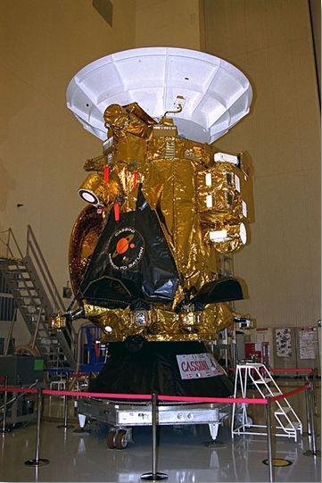
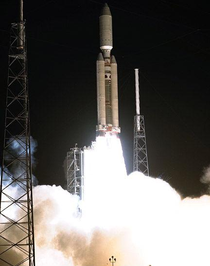
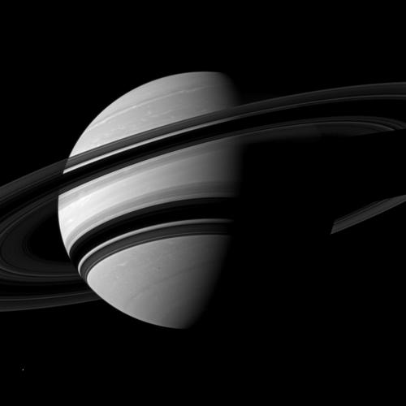
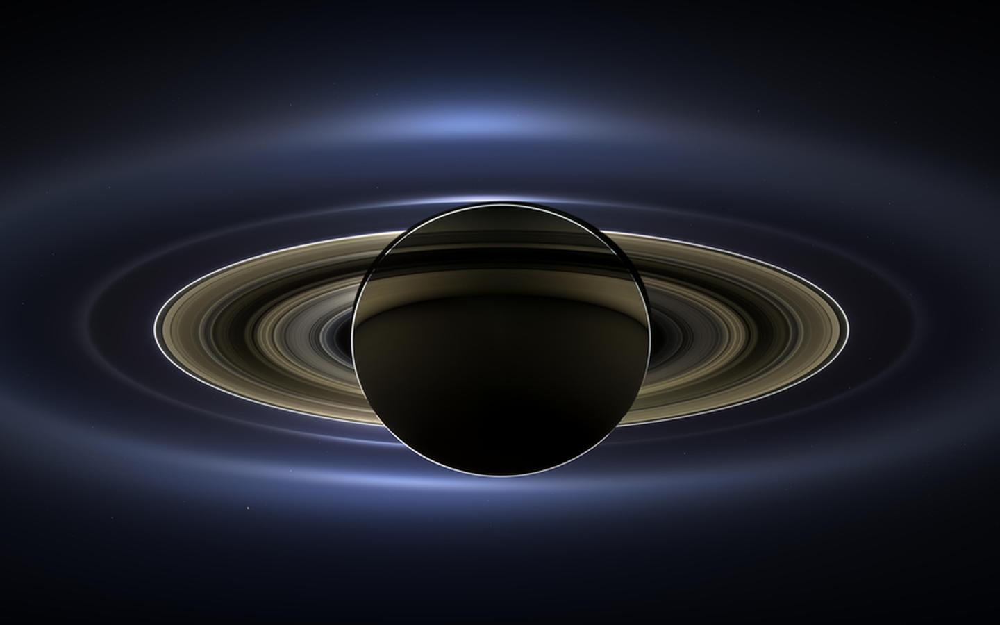

Project by Braeden Mayer (Science 9 – Ms. Wiebe)
Cassini
Cassini is an unmanned orbiter (an orbiter being a spacecraft that orbits celestial objects) launched as a part of the joint NASA-ESA Cassini-Huygens mission on October 15, 1997. Cassini is named after the Italian astronomer Giovanni Domenico Cassini. Giovanni Cassini was known for discovering some of the satellites of Saturn.
Details about the mission
Development of the combined Cassini-Huygens craft had been in progress for over a decade prior to launch, with its roots formed in 1982. Three space administrations were involved in the development: the National Aeronautics and Space Administration (NASA) the European Space Agency (ESA), and the Agenzia Spaziale Italiana (ASI/Italian Space Agency). Cassini's initial task was to study Saturn and its rings, and various satellites, such as Enceladus and Titan. On October 15, 1997 Cassini was launched on a Titan IV booster rocket from Cape Canaveral, Florida. In 2008, funding for Cassini was extended, and the mission was renamed the Cassini Equinox Mission. Later on in 2010, the mission was extended once again, and renamed the Cassini Solstice mission.
Details about studies
One of the most recent discoveries by Cassini is evidence that an underground ocean may exist on Enceladus. Scientists say that this ocean may likely play host to microbial life. In the past, Cassini has studied Titan and its thick, hazy atmosphere, and discovered large lakes of methane and evidence of volcanic activity. In the future, Cassini will make multiple descents into Saturn to gather information about the planet and its internal structure and its rings, and fluctuations in the magnetic enviornment.
Facts
- To gain momentum, Cassini-Huygens used a technique called a gravitational slingshot. This means the spacecraft enters a planet’s orbit, and using its gravitational pull, the craft can accelerate, decelerate, or change course. Cassini did this four times after launch: Once around Venus in 1998, once around Venus and once around Earth in 1999, and once around Jupiter in 2000.
- The Huygens probe disconnected from Cassini on December 25, 2004, and landed on Titan on January 14, 2005. The Huygens landing was the first probe landing to ever be completed in the outer solar system.
Attributes
- Cassini weighs approximately 4700 pounds unfuelled, and is around 6.7 metres tall and four metres wide.
- Cassini is powered by plutonium, as solar power was not an option due to the distance the craft would travel from the Sun. The heat generated is converted into electricity to power Cassini.
- The Cassini orbiter is a very complicated orbiter and has 12 different instruments on board for measuring, analyzing, and recording various different things.
- Cassini won't return to Earth after its retirement. Inititally it had been planned that when the mission was over in 2017 Cassini would be put into a controlled descent into Saturn, however this has been put on hold indefinitely.



